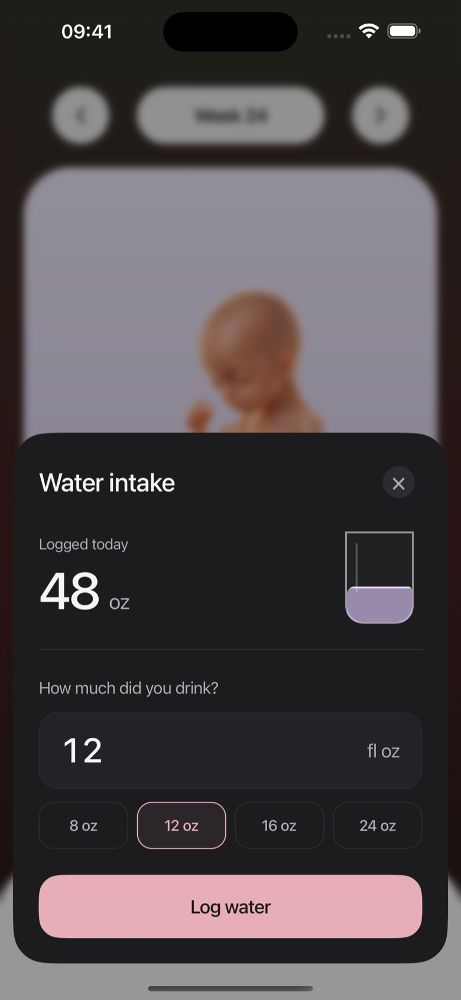
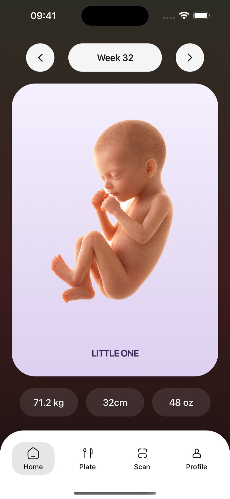

A little help.
In your everyday.
AI assisted guidance, a catalog of meal ideas, and your own everyday records.
Getting started should
feel this simple.
Your tastes. Your routine. Your pregnancy week.
Embryly brings them together in one place.
Make it yours.
Share your pregnancy stage, food preferences, and the ingredients you avoid. Update them as life changes.
Find your next meal.
Explore breakfast, lunch, and dinner ideas matched from our meal catalog. Check ingredients and preparation notes.
Keep a gentle rhythm.
Log meals, cravings, and water. Follow your pregnancy week and keep your everyday moments together.
Good food ideas.
Less daily deciding.
Some days you want something new. Others, something familiar. Find meal inspiration for your preferences and pregnancy week, with ingredients and estimated nutrition in view.
Meal suggestions are general inspiration, not a complete or prescribed daily diet. Always check labels and preparation.
How recommendations work

A closer look
at what’s on your plate.
Scan a food photo or barcode to explore AI generated food information. Understand what to check, then make decisions with your own care team’s advice in mind.
Start with the food safety guideAI can be wrong. A photo cannot verify allergens, cooking temperature, freshness, or contamination.
Every sip.
A little easier to remember.
Log your water in ounces and see your daily total fill up.

Your little one.
Your unfolding story.
Explore weekly illustrations and keep your own measurements close.

A companion to your day.
Your care team comes first.
Embryly is a general wellness app, not a medical device. Our illustrations do not show your actual baby or measure their development. For personal nutrition or pregnancy advice, speak with your doctor, midwife, or registered dietitian. Read about our sources and limits.